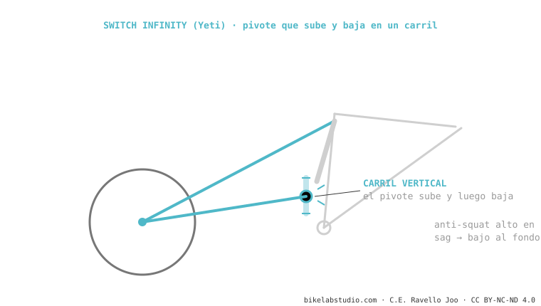

El Switch Infinity de Yeti cambia la bieleta inferior por un pivote que se desliza en vertical sobre dos guías (Kashima, de Fox) y cambia de sentido a mitad del recorrido. Eso da anti-squat alto en el sag (pedalea firme) que cae al hundirse (suelto y poco kickback). Exclusivo de Yeti; pide mantenimiento estricto de las guías. Es de los sistemas.
Casi todos los sistemas rotan bieletas. Yeti hizo algo raro: deslizar un pivote en línea recta. Y funciona.

Al subir el pivote en el primer tercio y bajarlo después, Yeti consigue lo que todo diseñador busca: anti-squat alto donde pedaleas, bajo donde golpeas. La transición es muy suave porque el movimiento es continuo, no un salto de bieleta. Por eso las SB se sienten eficientes subiendo y muy sueltas en lo profundo.
No: el pivote deslizante genera un pivote virtual, tipo doble-enlace. Lo distintivo es que se traslada en vertical.
Sí: las guías expuestas piden limpieza y lubricación periódicas para no perder tacto.
Dinos el modelo y te decimos su curva y el servicio que el Switch Infinity necesita. Escríbenos por WhatsApp
© 2026 BikeLab Studio. Contenido bajo CC BY 4.0: puedes copiarlo, traducirlo y publicarlo, incluso con fines comerciales. La cita es obligatoria. Sin atribución, la licencia se revoca de forma automática (CC BY 4.0, §6.a) y el uso pasa a ser una infracción de derechos de autor: solicitamos la retirada del contenido y su desindexación. · Diseño y propiedad: Carlos Ravello Joo